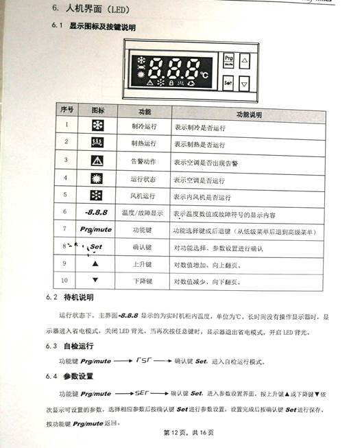
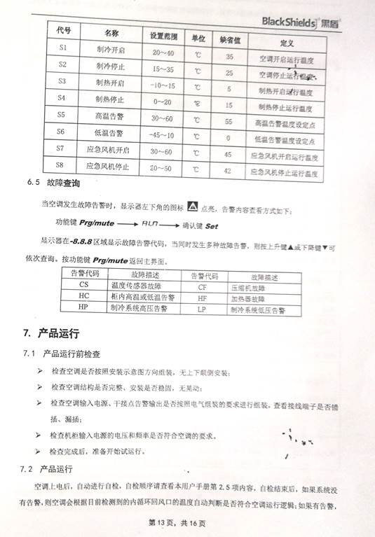

将空调传感器悬浮放置在射源上方150mm，空调致冷启动温度设置为35℃，制冷关闭温度设置为25℃。低温报警值设置为-20℃，高温报警值设置为45℃。
具体设置方法如下：


电机驱动器上电后，设置初始化参数如下：
P0-02=07 电机转速显示
P0-17=07 选择状态寄存器1中内容为电机转速
P1-01=2 选择速度控制模式
P2-10=101 数字输入引脚DI1设定为伺服启动
P2-11=106 数字输入引脚DI2设定为反向指令
P2-12=114 SPD0为常开触点
P2-13=115 SPD1为常开触点
P2-15=121 EMG设置
P2-16=027 数字输入引脚DI7不做功能规划
P2-17=027 数字输入引脚DI8不做功能规划
P3-00=01 设置局号为01
P3-01=11 通讯传输率为9600
P3-02=33 通讯协议8,N,2（MODBUS,ASCII）
P1-34=1000 电机速度加速常数
P1-35=1000 电机速度减速常数
P1-36=1000 电机加减速平滑常数
注：参数设置完成后，需对驱动器重新上电！
操作界面中点击“设置”-“硬件参数”，设置速度值，点击运行电机按钮，查看电机是否正常运行且为正转；在电机正转的状态下，更改电机速度值，查看电机速度是否有变化，操作界面上的电机反馈值是否随之改变；点击停止电机按钮，查看电机是否停止运行；同样步骤测试反转效果。
正常上电后，伺服驱动器界面显示0，若界面存在报警值AL，可根据报警值查找相关问题；若无报警，但控制异常，则分为以下几个方面：
1）无法正常启停输送带
首先检查伺服驱动器本身及与电机间的接线是否全部查牢，然后检查PLC信号输出至伺服驱动器的相关线路，包括输出口O6与O7接至中间继电器，中间继电器触点接至驱动器的相关线路。
2）启停正常，但速度调节异常
检查PLC的模拟量输出模块上的VO-0、COM接至驱动器的CN1上的相关线路。射源是否安装要求安装磁环，电机控制模拟信号线是否使用屏蔽线并接地。
3）运行正常，但速度反馈异常
检查PLC串口通讯模块上的+485、-485及GND接至驱动器的CN3的线路。